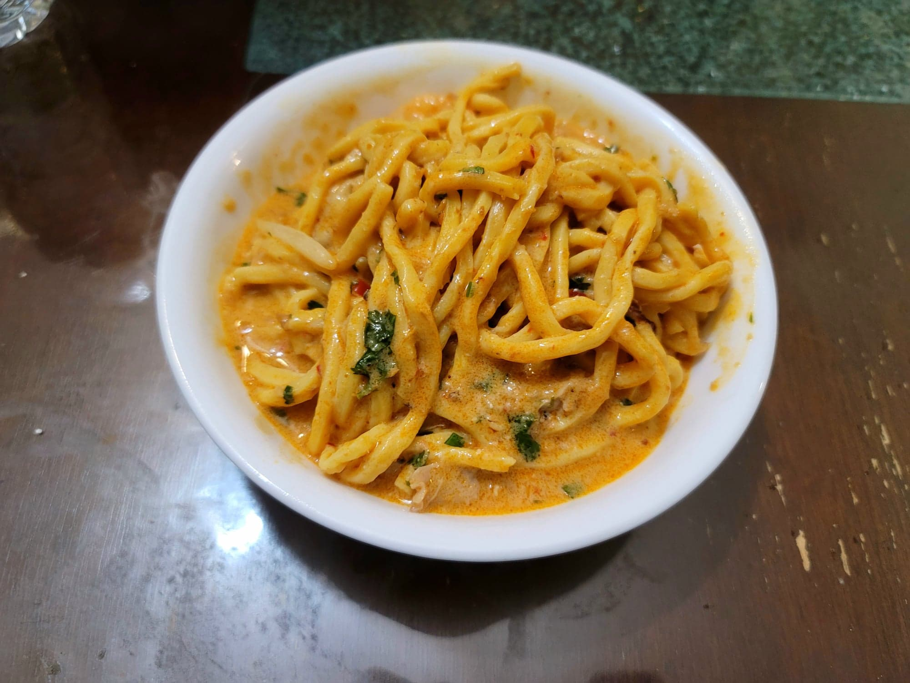

Laksa

Ingredients:
Chicken Broth:
- 3 Chicken legs
- 2 cups Chicken broth
- 2 cups Water
- Optional: Shrimp shells
Laksa Broth:
- 1 1/2 tbsp Canola oil
- 2 cloves Garlic, minced
- 1 inch Ginger, minced
- 1 Lemongrass, white part, minced
- 2 Bird eye chilis, minced
- 1/2 cup Laksa paste
- 1 14 oz can Coconut milk
- 2 tsp Fish sauce
- 1-3 Limes, juiced, to taste
Laksa:
- 80 g Tofu puffs, halved
- 3-4 Shallots, finely sliced
- 1/4 Flour
- 2 tbsp Canola oil
- 12 Shrimp, peeled
- Salt, to taste
- Pepper, to taste
- 1 lb Fresh Hokkien or Vermicelli noodles or 1/2 lb dried and prepared
- 1/2 lb Fish cake, sliced
- 1-2 cups Mung bean sprouts
- 1/2 bunch Cilantro, chopped
Instructions:
- Combine the chicken broth ingredients into a pot. Bring to a boil and then reduce to medium-high. Let cook for 25 minutes. Then strain the chicken and shrimp shells from the broth, reserving both the broth and the chicken. Let the chicken rest for a few minutes before shredding with forks.
- For the laksa broth, heat the canola oil in a separate large pot over medium-low heat. Add in the garlic and ginger and sauté for 20 seconds or until fragrant. Then add in the chilies and lemongrass and sauté for another minute.
- Bring the heat to medium and add in the laksa paste. Stir-fry for 2 minutes, stirring constantly. Then add in the chicken broth, coconut milk, and fish sauce. Cover and let simmer for 10 minutes.
- Taste the laksa broth and add the lime juice and more fish sauce to taste. Add in the halved tofu puffs. Remove from heat and let sit, covered, for at least 5 minutes.
- Coat the shallots well with the flour. Heat 2 tbsp oil in a large pan over medium heat and add in the shallots. Fry, stirring often, until golden and crispy, about 10-15 minutes. Then remove the shallots from the pan.
- Season the shrimp with salt and pepper to taste. In the same pan used for frying the shallots, add in the shrimp. Sear over medium heat for 2 minutes on one side, and then flip and sear for another 1-2 minutes on the other side.
- Heat the laksa broth over medium heat. Add in the chicken, shrimp, noodles, fish cake, and mung bean sprouts to the laksa broth and toss to combine until the broth starts to come to boil. Then remove from the heat and garnish with the fried shallots and cilantro. Serve immediately.